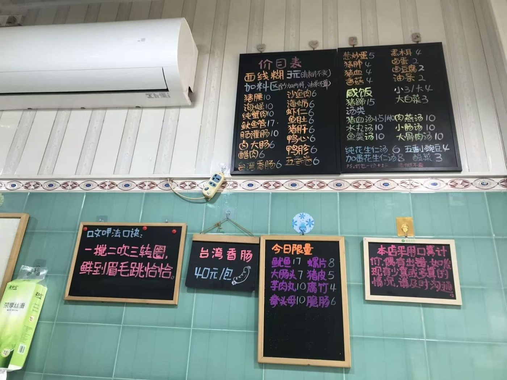
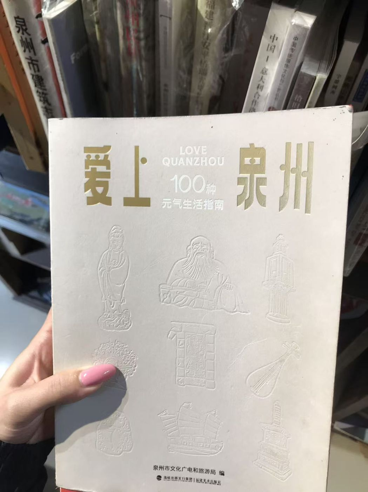
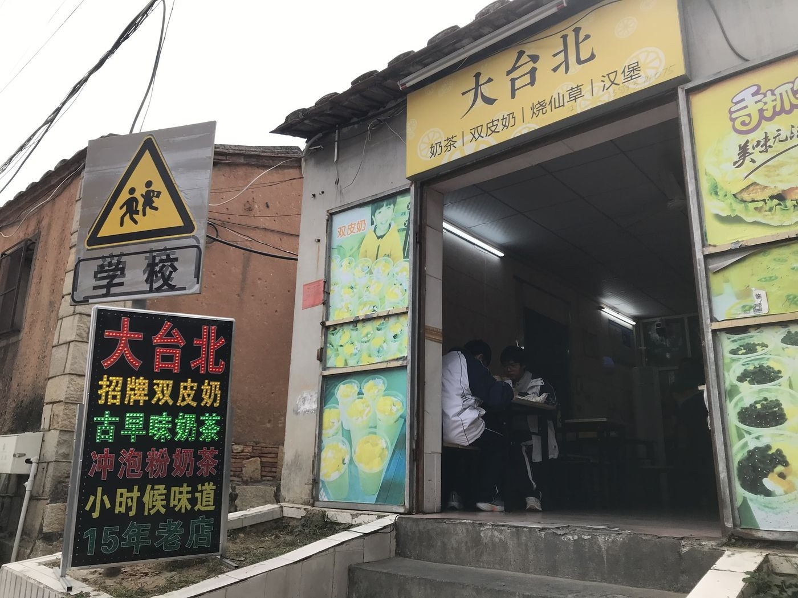
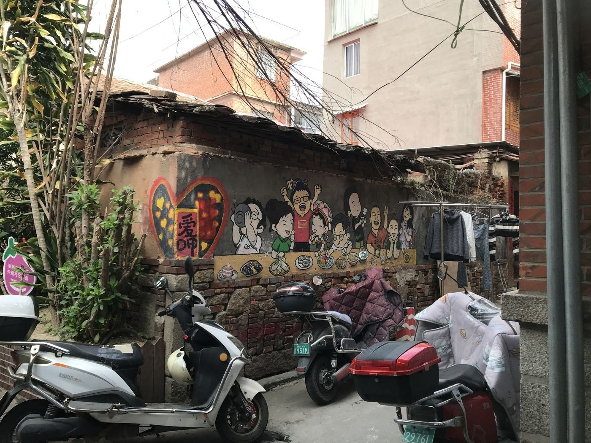
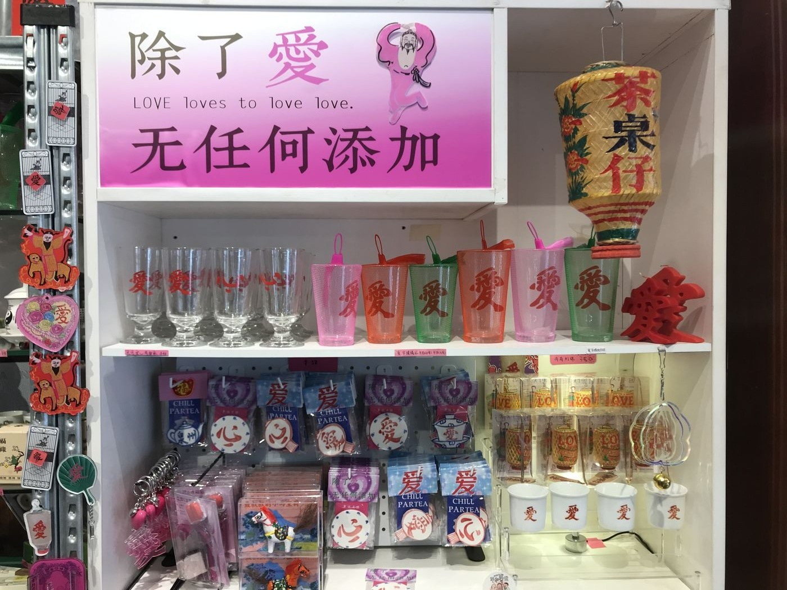
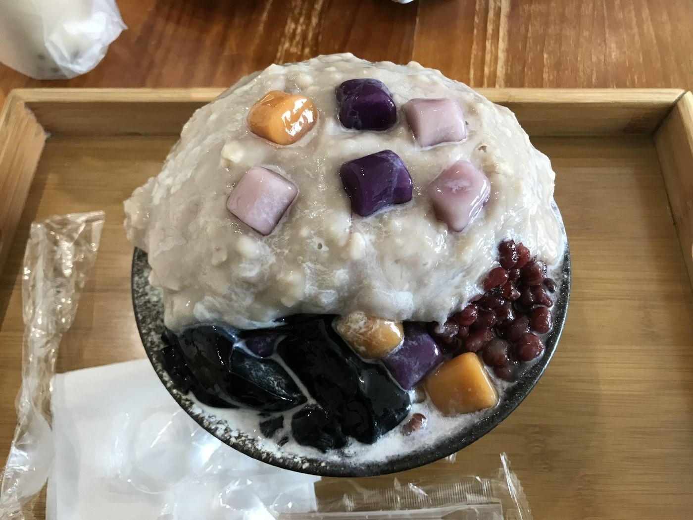
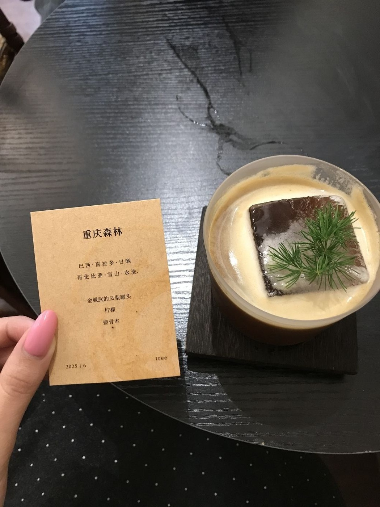
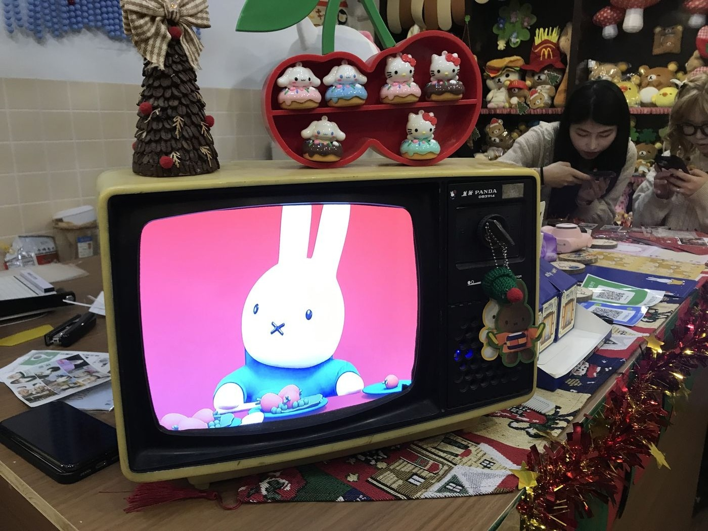

🏠 家乡介绍
 🏮
⛩️
🌸
🏯
✨
🏮
⛩️
🌸
🏯
✨
📍 福建 · 泉州
半城烟火半城仙
泉州，古称刺桐城，海上丝绸之路的起点，联合国教科文组织认定的世界遗产城市。千年海交史让东西方文化在此交汇，留下了无数珍贵的文化遗产。漫步在泉州古城的青石板路上，红砖古厝的燕尾脊在夕阳下翘首向天，开元寺的钟声穿过东西塔回荡千年，清净寺的穹顶与关帝庙的香火隔街相望。南音的古韵从巷弄深处飘来，提线木偶在丝线的牵引下活灵活现，蟳埔女头戴簪花围走过蚵壳厝，每一步都踩在历史的回音里。
22世遗点
1300+年历史
6项非遗
800+万人口
🏛️ 文化遗产
 ⛩️
⛩️
开元寺 · 千年古刹
福建省内规模最大的佛教寺院，东西双塔是泉州的城市标志。双塔高耸入云，历经千年风雨仍巍然屹立，见证了海上丝绸之路的辉煌与沧桑。每月农历廿六，勤佛日人山人海，香火鼎盛。
 🕌
🕌
清净寺
中国现存最古老的伊斯兰教寺，阿拉伯建筑风格，是宋元泉州海外交通的重要史迹。
 🏯
🏯
关帝庙
泉州香火最旺的庙宇之一，闽南关帝信仰中心，每逢节日人山人海，夜晚灯火辉煌。
 🌉
🌉
洛阳桥
中国四大古桥之一，蔡襄主持建造。首创"筏形基础"造桥法，月光下的洛阳桥美如画，是古代桥梁建筑的杰作。
 👩
👩
蟳埔女 · 簪花围
国家级非遗。蟳埔女头戴簪花围被称为"头上花园"，蚵壳厝是独特的建筑奇观。
 ⛰️
⛰️
清源山 · 道教圣地
泉州母亲山，老君岩是道教石刻瑰宝。山中茶香四溢，清源洞、弥陀岩等名胜错落有致。
🍜 泉州美食
 🍜
🍜
面线糊
泉州人的早餐之魂，细如发丝入口即化
 🪱
🪱
土笋冻
Q弹爽口的闽南特色，蘸酱更美味
 🦪
🦪
海蛎煎
鲜香酥脆海味十足，配甜辣酱一绝
 🥩
🥩
醋肉
永春老醋腌制酥炸外脆里嫩，泉州人最爱的炸物
 🍚
🍚
肉粽
料足味美甜咸皆宜，端午必备美味
 🥬
🥬
润饼菜
清明时节的味觉记忆，薄饼卷万物
 🧊
🧊
四果汤
夏日消暑甜蜜良方，十几种配料任选
 🥞
🥞
满煎糕
松软香甜的古早味早点，泉州人的童年记忆
 🐄
🐄
牛肉羹
手工捶打牛肉嫩滑Q弹，闽南经典汤羹
 🦆
🦆
姜母鸭
砂锅慢炖姜香四溢，滋补暖身泉州名菜
 🥘
🥘
泉州卤面
浓稠卤汁裹满面条，料多味足一碗满足
📸 泉州游玩日记
用脚步丈量古城，用镜头记录烟火。一日穿行泉州，从清晨的面线糊到傍晚的咖啡香——这是我最熟悉也最心动的城市漫步路线。

🍜🌅 清晨 · 早餐
泉州人的一天从面线糊开始。细如发丝的面线在猪骨高汤里翻滚，加醋肉、卤蛋、油条，撒葱花胡椒，一碗下肚整个人都被温柔唤醒。

📚☀️ 上午 · 阅读
芥子书屋。须弥藏芥子，芥子纳须弥——这家藏在西街附近小巷里的独立书店，名字取自佛经，空间也小巧得恰到好处。推开木门，满墙的闽南文化书籍、手作文创和独立杂志扑面而来。店主养了一只橘猫，懒洋洋地趴在窗台上晒太阳。点一杯铁观音，翻一本旧书，午前的时光就在书香和茶香中缓缓流淌。

🍽️🕛 正午 · 午餐
大台北简餐。泉州学生党的集体记忆。从初中到大学，这家店陪伴了一代又一代泉州人。份量超足的炸鸡排饭、淋满黑胡椒酱的铁板面、还有那杯永远喝不腻的珍珠奶茶。装修朴素到几乎简陋，但每到饭点门口就排起长队——这大概就是一家店最真实的底气。

🏙️☀️ 午后 · 漫步
吃饱喝足在老城区漫无目的地走街串巷——红砖古厝的燕尾脊在蓝天下是泉州最美的天际线，石板路旁老阿嬷坐在门口剥海蛎，猫在墙头打盹，摩托轰鸣与寺庙钟声交织。

🍵🍃 下午 · 喫茶
茶桌仔。闽南人的血液里流淌的可能是铁观音。街边一张折叠桌、几把塑料矮凳，便是一方天地。阿公阿嬷围坐，一壶茶从浓泡到淡，从家长里短聊到国际大事。我们也学着当地人的样子坐下，老板热情地多送了一碟花生。茶很浓，阳光很暖，时光很慢——这是属于泉州的午后节奏。

🍧☀️ 午后 · 甜品
米斯小庄庄·芋泥冰。夏天最幸福的瞬间莫过于此——超大一盘刨冰端上桌，顶上堆着手工熬制的芋泥和芋圆，炼乳从"山顶"缓缓流下。一勺挖下去，绵密的芋泥混着碎冰在嘴里化开，甜而不腻、冰凉爽口。比起网红店的精致摆盘，这里的豪迈份量更让人心动，两个人分着吃刚刚好。

☕🌤️ 傍晚 · 咖啡
藏在中山路旁不起眼的巷子里，推开门别有洞天——原木空间、暖黄灯光、满墙黑胶。招牌「重庆森林」是凤梨发酵液加冷萃，热带果酸后是咖啡深沉的苦香，像极了王家卫电影里的暧昧与疏离。

📸🌙 入夜 · 纪念
钻进街角那家还在用老式大头贴机的店铺，选边框、摆姿势、倒数三二一——闪光灯亮起的瞬间仿佛穿越回中学时代。乘兴而来，满载而归。
🎭 闽南文化
南音 · 中国音乐活化石
中国现存最古老的乐种之一，起源于唐、形成于宋。琵琶、洞箫、二弦、三弦，悠扬婉转的曲调穿越千年时光。2009年列入联合国非遗名录，是泉州献给世界最美的声音。在古城深巷里听一场南音，仿佛回到了唐宋年间的梨园。
梨园戏
宋元南戏活化石，科步细腻、唱腔婉转，一颦一笑间演绎悲欢离合，是中国戏曲艺术最珍贵的遗产之一。
提线木偶
线功精妙绝伦，一根根丝线在艺人手中如同有了生命。一提一放间尽显千年传承的智慧与匠心，是泉州独有的指尖魔法。
红砖古厝 · 闽南建筑之魂
燕尾脊高高翘起指向天空，红砖墙在夕阳下泛着温暖的光。出砖入石、雕梁画栋，每一座古厝都是泉州人心中最美的家的模样。漫步古城，这些红砖院落是活着的历史、看得见的乡愁。
泉州是一座你来了就不想走的城市。这里有最暖的阳光、最鲜的海味、最古的韵味。无论走多远，泉州永远是心底最柔软的归处。